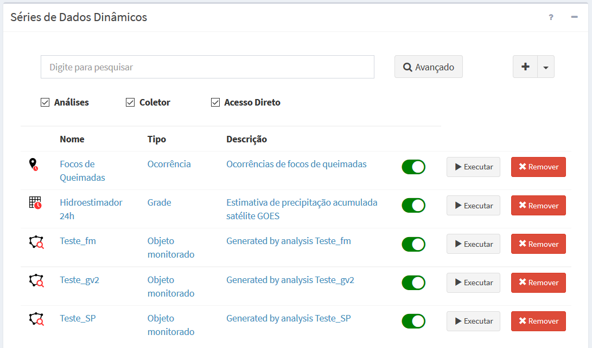
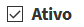
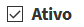
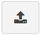
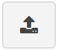

Dados Dinâmicos
Vimos acima que os dados dinâmicos podem ser do tipo PCD (instrumento em pontos fixo realizando uma ou mais medidas), ocorrências (dados vetoriais que variam no espaço e no tempo podendo incluir atributos) e matriciais (grades retangulares de observação ou previsão).
Uma série de Dados Dinâmicos devem estar associado a um servidor de dados para serem coletados sistematicamente ou apenas acessados diretamente. Este servidor pode fornecer um ou mais conjuntos de dados dinâmicos. Dessa maneira, as principais características de um dado dinâmico são:
- Um dado dinâmico é identificado por um nome único;
- Um usuário pode definir vários dados dinâmicos em um projeto;
- Um dado dinâmico pode ser compartilhado entre projetos;
- Dados dinâmicos são utilizados por um ou mais modelos de análise;
- Um dado dinâmico será identificado por um ícone; PCD ( ), Ocorrência (
 ) ou Matriz ();
) ou Matriz (); - Um dado dinâmico pode ser criado como resultado de uma análise e neste caso os ícones estão associados quando a análise for baseada em objetos monitorados (), baseada em matrizes () baseada em PCD ( ) ou baseada em processamento vetorial ().
- Um dado dinâmico pode ser criado ainda como resultado de interpolação de dados dinâmicos de PCD e identificado pelo ícone .
A Figura 2.13 mostra a área de trabalho do menu “ Dados Dinâmicos” com a lista de alguns dados disponíveis. Caso a lista seja muito extensa poderá digitar um nome na caixa de texto “Digite para pesquisar” para encontrar um item específico. Nesta área é possível selecionar um dado dinâmico para fazer alguma edição, criar um dado novo ou ainda remover um dado existente. Veja a seguir detalhes de cada tipo de dado dinâmico e as opções de manipulação correspondentes.
Dados Dinâmicos” com a lista de alguns dados disponíveis. Caso a lista seja muito extensa poderá digitar um nome na caixa de texto “Digite para pesquisar” para encontrar um item específico. Nesta área é possível selecionar um dado dinâmico para fazer alguma edição, criar um dado novo ou ainda remover um dado existente. Veja a seguir detalhes de cada tipo de dado dinâmico e as opções de manipulação correspondentes.

Figura 2.13 – Módulo de Administração: Lista de dados dinâmicos disponíveis na área de trabalho.
Uma propriedade importante de um dado dinâmico é máscara a ser utilizada para definir a data e hora em que o dado foi produzido. Veja mais detalhes da máscara dos dado dinâmico.
Veja a seguir mais detalhes da manipulação de dados dinâmicos.
ADICIONANDO DADO DINÂMICO:
Para adicionar um novo dado dinâmico é necessário ter um projeto ativo. No menu de opções selecione “ Dados Dinâmicos” para que a lista de dados disponíveis seja apresentada na área de trabalho. Clique no botão “ + ” para adicionar novo dado. Escolha o formato do dado a ser lido ou a ser coletado. Preencha os parâmetros de leitura e de armazenamento somente se não fizer acesso direto. Utilize o botão “Salvar” para salvar o dado dinâmico. Não é permitido nomes de dados em duplicidade. Botão “Cancelar” volta à tela anterior sem salvar o dado. Detalhes de cada tipo de dado dinâmico veja nos itens específicos para dado matricial, PCD e ocorrência.
CONSULTANDO E ALTERANDO DADO DINÂMICO:
Para consultar e alterar as configurações de um dado dinâmico clique em “ Dados Dinâmicos” no menu de opções e na área de trabalho clique sobre o nome ou tipo de um item disponível. Após editar os campos desejados utilize o botão “Salvar” para salvar as alterações. Botão “Cancelar” volta à tela anterior sem salvar alterações.
Dados Dinâmicos” no menu de opções e na área de trabalho clique sobre o nome ou tipo de um item disponível. Após editar os campos desejados utilize o botão “Salvar” para salvar as alterações. Botão “Cancelar” volta à tela anterior sem salvar alterações.
ATIVANDO OU DESATIVANDO UM DADO DINÂMICO:
Para ativar ou desativar um dado dinâmico clique em “ Dados Dinâmicos” no menu de opções e na área de trabalho clique sobre o botão
Dados Dinâmicos” no menu de opções e na área de trabalho clique sobre o botão  (ativado) ou
(ativado) ou  (desativado) no item correspondente. Dados dinâmicos deixam de ser utilizados na posição desativado. Ao selecionar um dado dinâmico qualquer, na aba “Geral” o botão  tem o mesmo efeito dos botões acima apresentados na lista de dados dinâmicos.
(desativado) no item correspondente. Dados dinâmicos deixam de ser utilizados na posição desativado. Ao selecionar um dado dinâmico qualquer, na aba “Geral” o botão  tem o mesmo efeito dos botões acima apresentados na lista de dados dinâmicos.
FILTRANDO ITENS NA LISTA DE DADOS DINÂMICOS:
Para filtrar itens na lista de dados dinâmicos clique em “ Dados Dinâmicos” no menu de opções. Na área de trabalho no campo texto “Digite para pesquisar” digite o texto desejado. Note que todas as colunas disponíveis são utilizadas no filtro. Utilize o botão “Avançado” para apresentar os botões referentes aos tipos de dados dinâmicos e escolher os que deverão fazer parte da lista. Por padrão todos os tipos estarão selecionados. O filtro digitado e o(os) botões de escolha do tipo de dados dinâmicos são combinados para apresentar os itens da lista.
Dados Dinâmicos” no menu de opções. Na área de trabalho no campo texto “Digite para pesquisar” digite o texto desejado. Note que todas as colunas disponíveis são utilizadas no filtro. Utilize o botão “Avançado” para apresentar os botões referentes aos tipos de dados dinâmicos e escolher os que deverão fazer parte da lista. Por padrão todos os tipos estarão selecionados. O filtro digitado e o(os) botões de escolha do tipo de dados dinâmicos são combinados para apresentar os itens da lista.
IMPORTANDO UM DADOS DINÂMICO:
Para importar a configuração de um novo dado dinâmico de um documento no formato JSON (Java Script Object Notation) clique em “ Projetos” para apresentar a lista de projetos disponíveis na área de trabalho. Na parte superior da área de trabalho clique em “
Projetos” para apresentar a lista de projetos disponíveis na área de trabalho. Na parte superior da área de trabalho clique em “ ” e selecione o arquivo (arquivo *.terrama2) a ser importado. A janela da Figura 2.10 será apresentada para escolher o projeto destino, mesmo que não seja o projeto ativo. Clique o botão “Importar” para confirmar importação. As dependências do dado dinâmico que são os servidores de entrada e saída se houver serão importados. Caso um item do projeto destino tenha o mesmo nome de um item a ser importado, nada será importado ou atualizado.
” e selecione o arquivo (arquivo *.terrama2) a ser importado. A janela da Figura 2.10 será apresentada para escolher o projeto destino, mesmo que não seja o projeto ativo. Clique o botão “Importar” para confirmar importação. As dependências do dado dinâmico que são os servidores de entrada e saída se houver serão importados. Caso um item do projeto destino tenha o mesmo nome de um item a ser importado, nada será importado ou atualizado.
NOTA: Arquivos de configuração de um dado dinâmico e seus servidores de dados associados no formato JSON podem ser obtidos da exportação de parte um projeto qualquer do usuário (veja exportação de projetos acima).
EXPORTANDO UM DADO DINÂMICO:
Para exportar a configuração de um dado dinâmico utilize a opção de menu “ Projetos”. Na frente do nome do projeto clique em “”. Na janela apresentada desmarque o botão a frente do nome do projeto e abra os itens em “Dados Dinâmicos” com o botão “ + “. Marque ou desmarque o item desejado. Clique o botão “Exportar” para confirmar exportação dos itens marcados.
Projetos”. Na frente do nome do projeto clique em “”. Na janela apresentada desmarque o botão a frente do nome do projeto e abra os itens em “Dados Dinâmicos” com o botão “ + “. Marque ou desmarque o item desejado. Clique o botão “Exportar” para confirmar exportação dos itens marcados.
REMOVENDO UM DADO DINÂMICO:
Para remover um dado dinâmico de um projeto ativo clique no menu “ Dados Dinâmicos” para apresentar a lista de dados na área de trabalho. Na frente do nome do dado clique em “Remover”. Confirme a remoção na mensagem com “OK”.
Dados Dinâmicos” para apresentar a lista de dados na área de trabalho. Na frente do nome do dado clique em “Remover”. Confirme a remoção na mensagem com “OK”.
Importante: Um dado dinâmico somente poderá ser removido se não houver nenhuma análise associada. Caso o dado dinâmico tenha apenas visualizações ou alertas associados estes serão removidos juntas com o dado dinâmico.